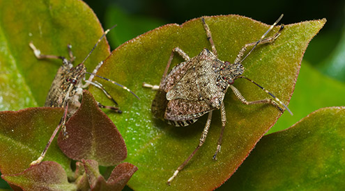
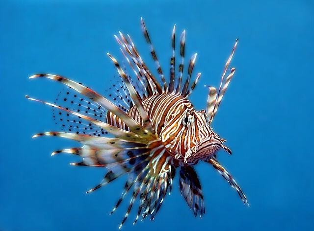
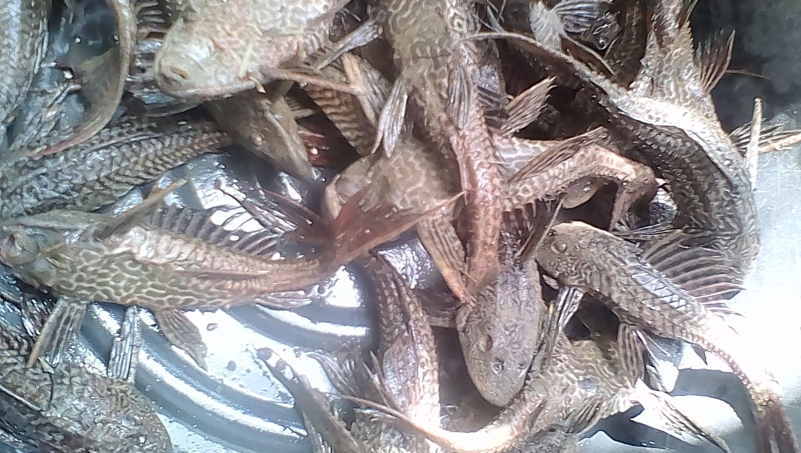

“Invasive Alien Species” is the term used to describe the phenomenon where organisms who do not natively reside in certain habitats are introduced to other habitats. These species are often the cause of massive destruction and loss of native species in the respective habitats. Since they have no natural predator or “control feature”, they are free to consume and reproduce, reducing overall biodiversity and quality of habitats.
Other than the fact that these alien species cause destruction to biodiversity, it also in turn affects us heavily. Due to the destruction of ecosystems caused by invasive alien species, millions of people will lose their livelihood due to a decrease in available wildlife, resources and the like. Furthermore, the quality of air and water in the ecosystems will drastically decrease, causing health risks to our population.

One such example of invasive alien species is with the lionfishes in the Atlantic Ocean. Lionfish can grow as large as 18.5 inches in length and have venomous spines that prevent other marine species from eating them. They’re also predators themselves. They weren't even native there (where they are native 16000 kilometers away!), probably dropped from import ships or released from aquariums. Over time, due to the lack of a predator, they started to multiply without any harm, and with a breeding cycle of 55 days, even a few lionfish created a dynasty. Now, they can be seen all throughout the Atlantic Ocean, from Florida to the Bahamas to Belize. Their vicious appetite has lessened the natve fish population heavily, disrupting commercial fishing and the balance of the Ocean they reside in.
Some scientists say that the state of the Atlantic Ocean is irreversible, but a lot of people are still committed to disproving this. One of the most sustainable ways that the lionfish population is being controlled is through the eating of them. Divers and fishermen have started hunting for these fish, making livelihood out of them and shipping them to restaurants who can make their own money. Due to this, the population is at least being somewhat controlled, and hungry customers can sate their appetites with a delicious lionfish meal (don’t worry, chefs remove all toxins from the lionfish first!).

Now, there are many different invasive species that are plaguing the ASEAN REGION, like the Chromolaena odorata or the Pheidole megacephala, who prevent crop production and growth. Do we want the state of our land similar to the situation arising in the Atlantic Ocean? Do we want these animals to destroy the balance of our ecosystems? Lastly, do we want to save our planet? We can, and we can do that through education and commercialization of some of the invasive alien species in the ASEAN region, like the consumption and export of resources gained by hunting these invasive species.